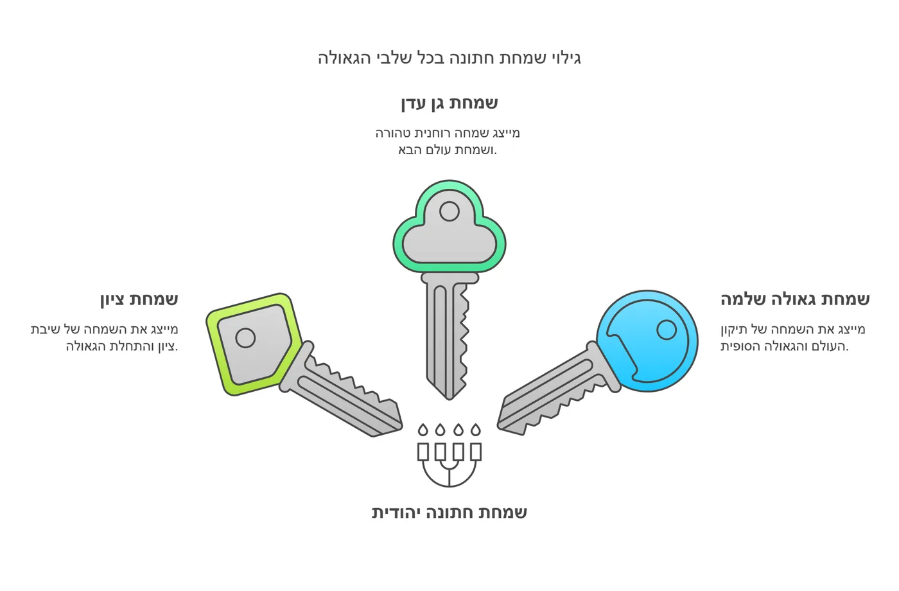

העומק הנפלא בהודיה על רגשות הקודש: מבט פנימי על השמחה האלוקית
הבה נתבונן יחד בסוד עמוק ומופלא: מדוע דווקא בשמחת חתן וכלה תיקנו חז"ל להודות על אותם רגשות קודש שהטביע הבורא בנשמותינו?
סולם הרגשות הקדושים
בשלוש הברכות האחרונות של שבע ברכות, אנו עולים בסולם מופלא של שמחה קדושה:
המדרגה הראשונה: שמחת ציון
כאשר אנו מברכים "שוש תשיש ותגל העקרה", אנו מודים על השמחה הבסיסית של שיבת ציון - התחלת הגאולה. זוהי השמחה של התקבצות עם ישראל למקומו.
המדרגה השניה: שמחת גן עדן
בברכת "שמח תשתח רעים אהובים", אנו מתעלים לשמחה עליונה יותר - שמחת גן עדן. זוהי שמחה רוחנית טהורה, מעין עולם הבא.
המדרגה העליונה: שמחת הגאולה השלמה
בברכה האחרונה אנו מגיעים לפסגת השמחה - "מהרה ישמע... קול חתן וקול כלה". זוהי השמחה של תיקון העולם במלכות שד-י.
מדוע דווקא בנישואין?
והנה הסוד הנפלא: דווקא בשמחת חתן וכלה מתגלים כל סוגי השמחה הללו במוחש. כי בחתונה יהודית:
- יש את שמחת בניין הארץ - זוג חדש בישראל
- יש את שמחת הנשמות - חיבור נשמות טהור
- יש את שמחת הגאולה - המשך שרשרת הדורות עד ביאת משיח
לימוד לחיים
ומכאן לימוד נפלא: כל בית יהודי שנבנה הוא מקדש מעט, שבו יכולים בני הזוג לחוות את כל דרגות השמחה הללו. כל דירה יהודית היא הזדמנות להשראת השכינה, וכל משפחה יהודית היא אבן בבניין הגאולה.
הרי לנו שההודיה על הרגשות בשבע ברכות אינה רק הודיה על שמחה גשמית, אלא הכרה עמוקה בכל מדרגות השמחה האלוקית הטמונות בבית יהודי. האין זה מאיר באור חדש את כל מהות הנישואין?